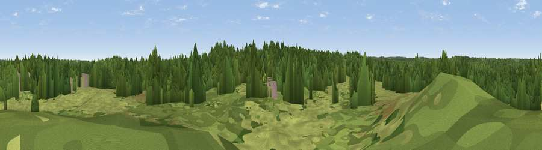

Kings Hill
#46151 in England · top 94% of its area beats it · near SunningdaleWhere it is
The exact computed spot (SU 94942 65731). Click the marker for map links.
The view, rendered

A 360° render of this exact spot computed from the terrain model, tree cover and land cover — summer colours, afternoon light, calibrated against photographs of famous viewpoints. Real trees, hedges and buildings will differ in detail.
The panorama
Grey silhouette: terrain skyline in each direction (720 bearings, Earth curvature and refraction included). Dashed green: skyline with trees (+15 m) and buildings (+8 m) as obstacles. Blue strip: how far the ground is visible on each bearing.
Where the view opens
Wedge length = distance to the farthest visible ground on that bearing (vegetation-aware). Rings at 10, 25 and 50 km.
What fills the view
68% woodland · 31% grassland · 1% built-up
Angular shares of the visible panorama (visual magnitude), not map area. Landscape diversity 0.30 (0–1 Shannon).
Key numbers
More beautiful places nearby
The staircase of upgrades: each row has a higher view potential than everything closer. Driving times are estimates from straight-line distance, calibrated against real road routing — check an actual route before setting out.
| Place | Direction | Drive | Score |
|---|---|---|---|
| Viewpoint near Valley End | S · 1 km | ~2 min | 42.8 |
| High Curley Hill | SW · 6 km | ~12 min | 49.7 |
| Viewpoint near Bishopsgate | NNE · 8 km | ~16 min | 53.6 |
| Viewpoint near Compton | S · 17 km | ~30 min | 66.7 |
| Pitch Hill | SSE · 27 km | ~43 min | 68.2 |
| Viewpoint near Hascombe | SSE · 27 km | ~44 min | 69.5 |
| Viewpoint near Hascombe | S · 28 km | ~44 min | 70.1 |
| Viewpoint near Box Hill Village | ESE · 29 km | ~46 min | 71.0 |
51.38270, -0.63711 · source: osm peak · position refined by local search. Computed location — check access rights before visiting.